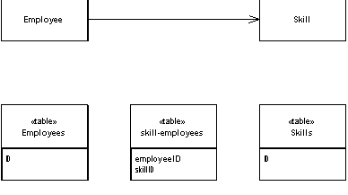
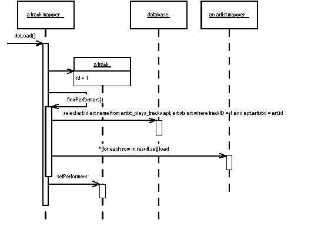

| Home | Articles | Talks | Links | Contact Me | ISA | ThoughtWorks |
Save an association as a table with foreign keys to the tables that are linked by the association.

Objects can handle multi-valued fields quite easily by using collections as field values. Relational databases don't have this feature and are constrained to single-valued fields only. When you're mapping a one-to-many association you can handle this using Foreign Key Mapping, essentially to use a foreign key for the single-valued end of the association. But a many-to-many association can't do this because there isn't a single-valued end to hold the foreign key.
The answer is the classic resolution used by relational data people for decades: create an extra table to record the relationship. We can then use Association Table Mapping to map the multi-valued field to this link table.
The basic idea behind Association Table Mapping is to use a link table to store the association. The link table has only the foreign key ids for the two tables that are linked together. It has one row for each pair of objects that are associated.
The link table has no corresponding in-memory object. As a result it has no ID. The primary key of the link table is the compound of the two primary keys of the tables that are associated together.
To load data from the link table you, in simple terms, peform two queries. Consider loading the skills for an employee. In this case you do, at least conceptually, queries in two stages. The first stage queries the skillsEmployees table to find all the rows that link to the employee you want. Then for each row in the link table you find the skill object for the related id.
If all this information is already in memory, this scheme works fine. If it isn't, this scheme can be horribly expensive in queries, since you'll do a query for each skill that's in the link table. You can avoid this cost by joining the skills table to the link table which allows you to get all the data in a single query, albeit at the cost of making the mapping a bit more complicated.
Updating the link data involves many of the same issues as updating a many valued field. Fortunately the matter is made much easier since you can in many ways treat the link table in a similar way to Dependent Mappings. No other table should refer to the link table, so you can freely create and destroy links as you need them.
The canonical case for Association Table Mapping is a many-to-many association, since there's not really any alternatives for that situation.
Association Table Mapping can also be used for any other form of association. It's more complex to use than Foreign Key Mapping, and involves an extra join - so it's not usually the right choice. However Association Table Mapping is an option if you have tables that you need to link but can't be altered, or if that's the way the tables are in an existing database schema.
Here's a simple example using the sketch's model. We have an employee class with a collection of skills where each skill can appear for more than one employee.
class Employee...
public IList Skills {
get {return ArrayList.ReadOnly(skillsData);}
set {skillsData = new ArrayList(value);}
}
public void AddSkill (Skill arg) {
skillsData.Add(arg);
}
public void RemoveSkill (Skill arg) {
skillsData.Remove(arg);
}
private IList skillsData = new ArrayList();
To load an employee from the database, we need to pull in the skills using an employee mapper. Each employee mapper class has a find method that creates an employee object. All mappers are subclasses of the abstract mapper class that pulls together common services for the mappers.
class EmployeeMapper...
public Employee Find(long id) {
return (Employee) AbstractFind(id);
}
class AbstractMapper...
protected DomainObject AbstractFind(long id) {
Assert.True (id != DomainObject.PLACEHOLDER_ID);
DataRow row = FindRow(id);
return (row == null) ? null : Load(row);
}
protected DataRow FindRow(long id) {
String filter = String.Format("id = {0}", id);
DataRow[] results = table.Select(filter);
return (results.Length == 0) ? null : results[0];
}
protected DataTable table {
get {return dsh.Data.Tables[TableName];}
}
public DataSetHolder dsh;
abstract protected String TableName {get;}
class EmployeeMapper...
protected override String TableName {
get {return "Employees";}
}
The data set holder is a simple object that contains an ADO.NET data set and the relevant adaptors to save it to the database.
class DataSetHolder... public DataSet Data = new DataSet(); private Hashtable DataAdapters = new Hashtable();
To make this example simple, indeed simplistic, we'll assume the data set has already been loaded with all the data we might need.
The find method calls load methods to load data for the employee.
class AbstractMapper...
protected DomainObject Load (DataRow row) {
long id = (int) row ["id"];
if (identityMap[id] != null) return (DomainObject) identityMap[id];
else {
DomainObject result = CreateDomainObject();
result.Id = id;
identityMap.Add(result.Id, result);
doLoad(result,row);
return result;
}
}
abstract protected DomainObject CreateDomainObject();
private IDictionary identityMap = new Hashtable();
abstract protected void doLoad (DomainObject obj, DataRow row);
class EmployeeMapper...
protected override void doLoad (DomainObject obj, DataRow row) {
Employee emp = (Employee) obj;
emp.Name = (String) row["name"];
loadSkills(emp);
}
Loading the skills is sufficiently awkward to demand a separate method to do the work.
class EmployeeMapper...
private IList loadSkills (Employee emp) {
DataRow[] rows = skillLinkRows(emp);
IList result = new ArrayList();
foreach (DataRow row in rows) {
long skillID = (int)row["skillID"];
emp.AddSkill(MapperRegistry.Skill.Find(skillID));
}
return result;
}
private DataRow[] skillLinkRows(Employee emp) {
String filter = String.Format("employeeID = {0}", emp.Id);
return skillLinkTable.Select(filter);
}
private DataTable skillLinkTable {
get {return dsh.Data.Tables["skillEmployees"];}
}
To handle changes in skills information there is an update method on the abstract mapper.
class AbstractMapper...
public virtual void Update (DomainObject arg) {
Save (arg, FindRow(arg.Id));
}
abstract protected void Save (DomainObject arg, DataRow row);
The update method calls a save method in the subclass.
class EmployeeMapper...
protected override void Save (DomainObject obj, DataRow row) {
Employee emp = (Employee) obj;
row["name"] = emp.Name;
saveSkills(emp);
}
Again I've made a separate method for saving the skills.
class EmployeeMapper...
private void saveSkills(Employee emp) {
deleteSkills(emp);
foreach (Skill s in emp.Skills) {
DataRow row = skillLinkTable.NewRow();
row["employeeID"] = emp.Id;
row["skillID"] = s.Id;
skillLinkTable.Rows.Add(row);
}
}
private void deleteSkills(Employee emp) {
DataRow[] skillRows = skillLinkRows(emp);
foreach (DataRow r in skillRows) r.Delete();
}
The logic here does the simple thing of deleting all existing link table rows and creating new ones. This saves me having to figure out which ones have been added and deleted.
One of the nice things about ADO.NET is that it allows me to discuss the basics of an object-relational mapping without getting into the sticky details of minimizing queries. With other relational mapping schemes you are closer to the SQL and have to take much of that into account.
For this example we'll look at reading in data for the classes in Figure 1.
Figure 1:
If we want to load an album, we want to load all the tracks on that album. As we load each track, we want to load all of the performers for that track.
Figure 2: Finding the performers for an album with a single SQL call
I'll begin by looking at the logic for finding an album.
class AlbumMapper...
public Album find(Long id) {
return (Album) abstractFind(id);
}
protected String findStatement() {
return "select ID, title, artistID from albums where ID = ?";
}
class AbstractMapper...
abstract protected String findStatement();
protected Map loadedMap = new HashMap();
protected DomainObject abstractFind(Long id) {
DomainObject result = (DomainObject) loadedMap.get(id);
if (result != null) return result;
PreparedStatement stmt = null;
ResultSet rs = null;
try {
stmt = DB.prepare(findStatement());
stmt.setLong(1, id.longValue());
rs = stmt.executeQuery();
rs.next();
result = load(rs);
return result;
} catch (SQLException e) {
throw new ApplicationException(e);
} finally {cleanUp(stmt, rs);
}
}
The album loads its data and also loads the tracks.
class AbstractMapper...
protected DomainObject load(ResultSet rs) throws SQLException {
Long id = new Long(rs.getLong("id"));
if (loadedMap.containsKey(id)) return (DomainObject) loadedMap.get(id);
DomainObject result = doLoad(id, rs);
loadedMap.put(id, result);
return result;
}
abstract protected DomainObject doLoad(Long id, ResultSet rs) throws SQLException;
class AlbumMapper...
protected DomainObject doLoad(Long id, ResultSet rs) throws SQLException {
String title = rs.getString(2);
long artistID = rs.getLong(3);
Artist artist = FinderRegistry.artist().find(artistID);
Album result = new Album(id, title, artist);
result.setTracks(FinderRegistry.track().findForAlbum(id));
return result;
}
To load the tracks it uses a particular finder to find the tracks for the album.
class TrackMapper...
public static final String findForAlbumStatement =
"SELECT ID, seq, albumID, title " +
"FROM tracks " +
"WHERE albumID = ? ORDER BY seq";
public List findForAlbum(Long albumID) {
PreparedStatement stmt = null;
ResultSet rs = null;
try {
stmt = DB.prepare(findForAlbumStatement);
stmt.setLong(1, albumID.longValue());
rs = stmt.executeQuery();
List result = new ArrayList();
while (rs.next())
result.add(load(rs));
return result;
} catch (SQLException e) {
throw new ApplicationException(e);
} finally {cleanUp(stmt, rs);
}
}
Loading the track data occurs in the load method.
class TrackMapper...
protected DomainObject doLoad(Long id, ResultSet rs) throws SQLException {
String title = rs.getString("title");
Track result = new Track(id, title);
result.setPerformers(findPerformers(id));
return result;
}
There's a separate method for loading the performers. This invokes the query on the link table.
class TrackMapper...
private static final String findPerformersStatement =
"SELECT " + ArtistMapper.COLUMN_LIST +
" FROM artist_plays_tracks apt, artists art " +
" WHERE apt.trackID = ? AND apt.artistId = art.id " +
" ORDER BY apt.artistID";
public List findPerformers(Long trackID) {
PreparedStatement stmt = null;
ResultSet rs = null;
try {
stmt = DB.prepare(findPerformersStatement);
stmt.setLong(1, trackID.longValue());
rs = stmt.executeQuery();
List result = new ArrayList();
while (rs.next()) {
ArtistMapper artistMapper = (ArtistMapper) FinderRegistry.artist();
result.add(artistMapper.load(rs));
}
return result;
} catch (SQLException e) {
throw new ApplicationException(e);
} finally {cleanUp(stmt, rs);
}
}
Since this method invokes the load method on the artist mapper, it gets the list of columns to return from the artist mapper class. That way the columns and the load method stay in sync.
 |  |
{kind=link}